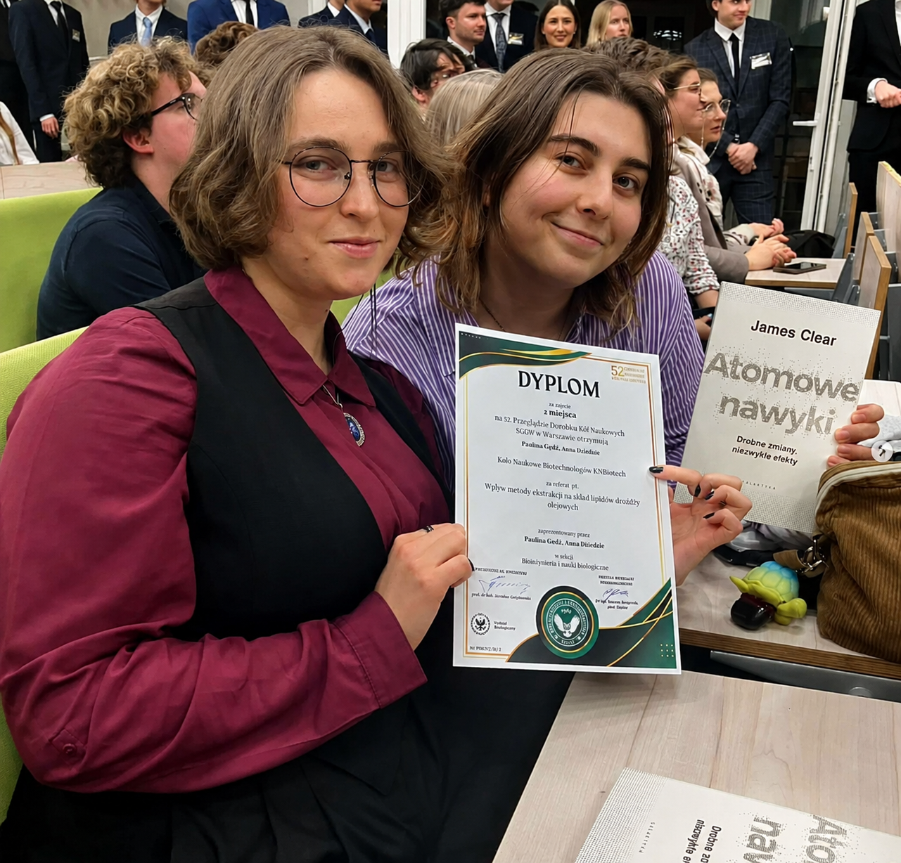
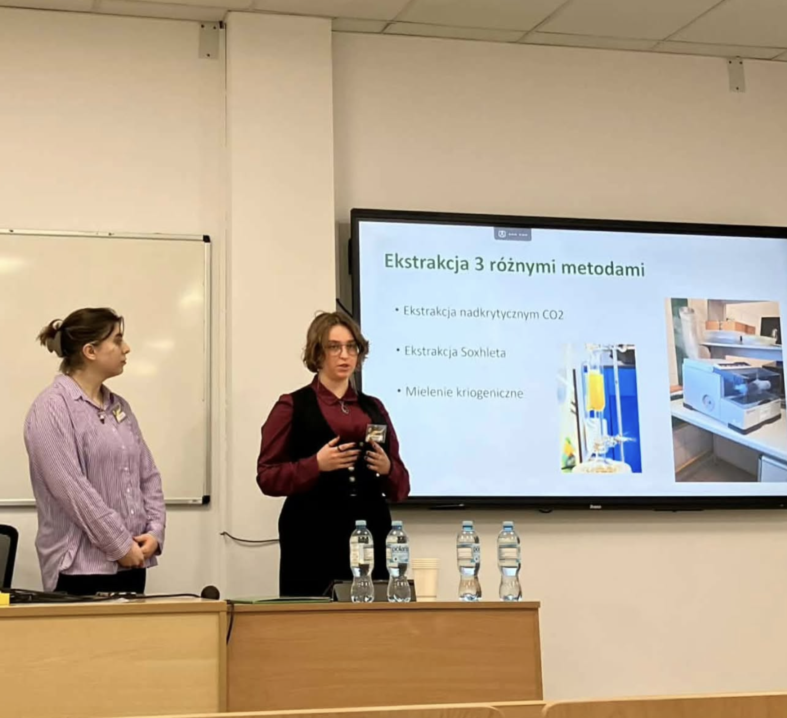
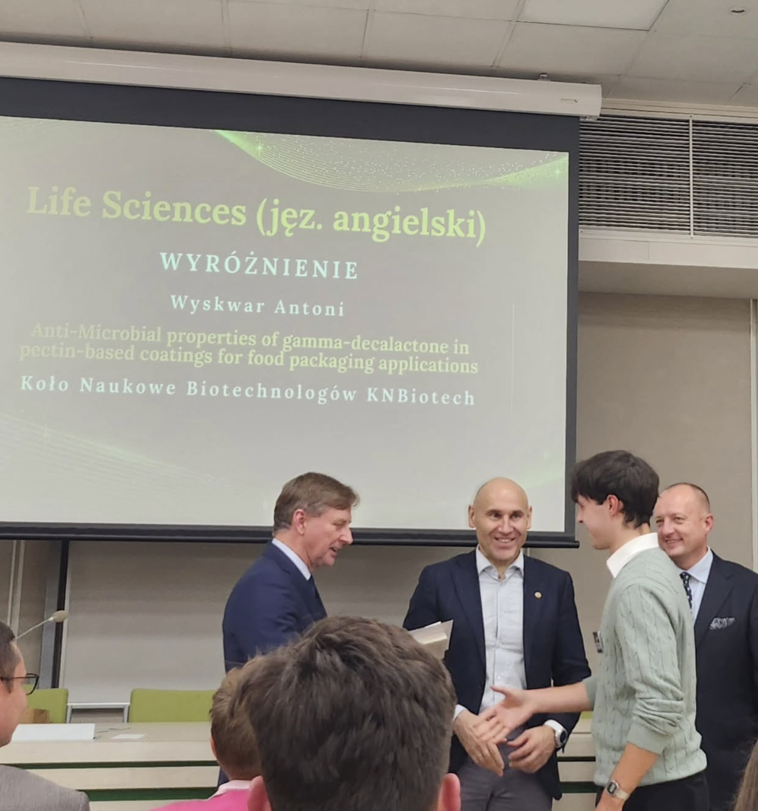
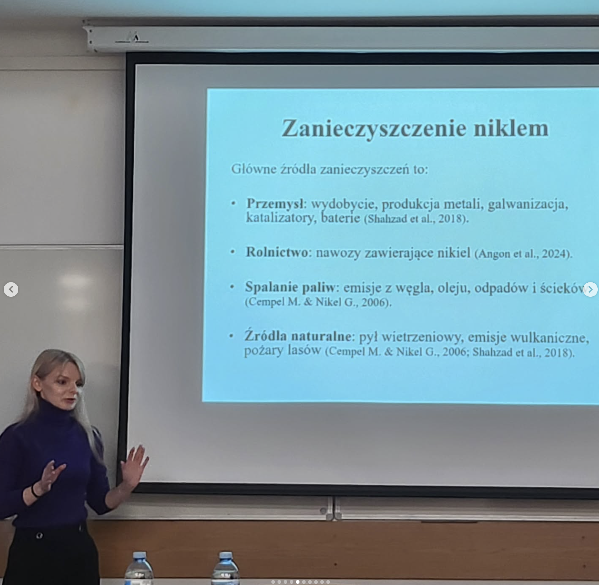
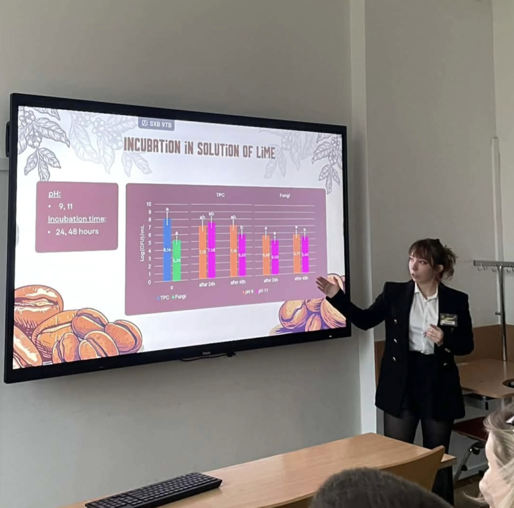
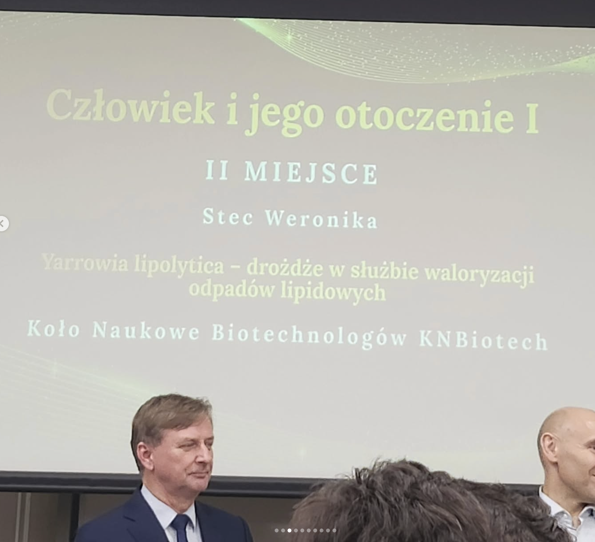
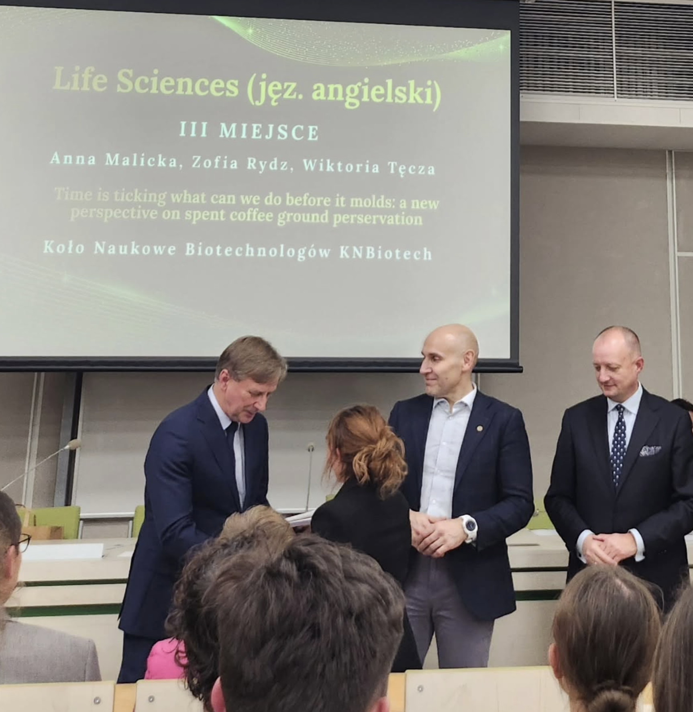
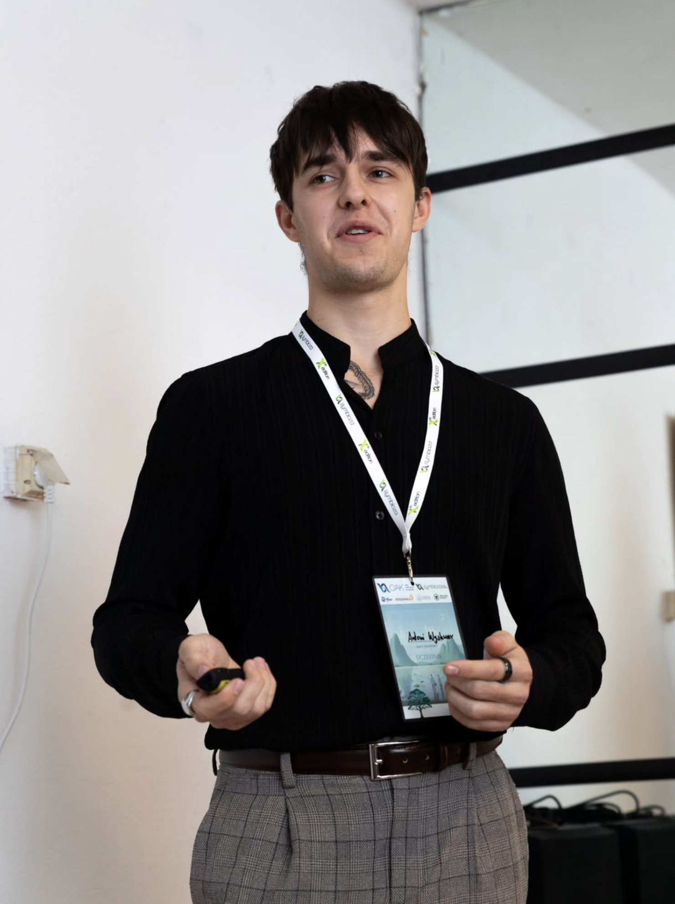

Zdjęcie najnowszego wydarzenia
Najnowsze wydarzenie KNBiotech
W tym miejscu pojawi się krótki opis najnowszej aktywności koła.
AKTUALNOŚCI I WYDARZENIA
Dokumentujemy wydarzenia, konferencje, warsztaty i inicjatywy, w których uczestniczą członkowie naszego koła — od najnowszych po najstarsze.
NAJNOWSZE WYDARZENIE
Najnowsze wydarzenie z udziałem KNBiotech.
Zdjęcie najnowszego wydarzenia
W tym miejscu pojawi się krótki opis najnowszej aktywności koła.
ARCHIWUM


Członkowie KNBiotech aktywnie uczestniczyli w 13. Międzynarodowym Sympozjum Biotechnologicznym „Symbioza”, prezentując wyniki swoich badań naukowych oraz wspierając organizację wydarzenia jako wolontariusze.
Symbioza jest jednym z największych wydarzeń naukowych dla młodych biotechnologów w Europie Środkowo-Wschodniej, gromadząc studentów, doktorantów i naukowców z Polski oraz zagranicy.
Data
8-10 maj 2026
Rodzaj wydarzenia
Międzynarodowe sympozjum naukowe
Gospodarz wydarzenia (2026)
Warszawskie Stowarzyszenie Biotechnologiczne „Symbioza”
Miejsce
Uniwersytet Warszawski
Warszawa, Polska
Międzynarodowe Sympozjum Biotechnologiczne „Symbioza” jest organizowane corocznie od 2012 roku i stanowi jedno z najważniejszych wydarzeń naukowych dla studentów, doktorantów oraz młodych naukowców zajmujących się biotechnologią i naukami pokrewnymi.
Program konferencji obejmuje wykłady uznanych naukowców, prezentacje ustne, sesje posterowe, warsztaty, panele dyskusyjne oraz spotkania networkingowe z przedstawicielami środowiska akademickiego i przemysłu biotechnologicznego.
Trzynasta edycja konferencji odbyła się w dniach 8–10 maja 2026 roku na Uniwersytecie Warszawskim. Uczestnicy mieli możliwość zaprezentowania swoich badań, udziału w wykładach prowadzonych przez uznanych specjalistów, warsztatach oraz spotkaniach z przedstawicielami firm i instytucji naukowych.
Członkowie KNBiotech aktywnie reprezentowali nasze koło, prezentując wyniki badań naukowych oraz wspierając organizację konferencji jako wolontariusze.







Członkowie KNBiotech reprezentowali nasze koło podczas corocznego Przeglądu Dorobku Kół Naukowych SGGW, prezentując wyniki swoich projektów badawczych.
PDKN to jedno z najważniejszych corocznych wydarzeń naukowych SGGW, podczas którego studenckie koła naukowe prezentują projekty, wyniki badań i dorobek swoich zespołów.
Data
5–6 Grudzień 2025
Rodzaj wydarzenia
Coroczna konferencja naukowa SGGW
Gospodarz wydarzenia (2025)
Koło Naukowe Ekonomistów
Miejsce
Wydział Ekonomiczny
Szkoła Głowna Gospodarstwa Wiejskiego (SGGW)
Przegląd Dorobku Kół Naukowych (PDKN) to największe coroczne wydarzenie naukowe poświęcone studenckim kołom naukowym na Szkole Głównej Gospodarstwa Wiejskiego (SGGW). Każdego roku inne koło naukowe pełni rolę organizatora konferencji, goszcząc uczestników z całego uniwersytetu.
Podczas konferencji studenci prezentują wyniki swoich badań, projekty inżynierskie, postery naukowe oraz wystąpienia ustne. Wydarzenie sprzyja współpracy międzywydziałowej oraz wymianie doświadczeń naukowych pomiędzy studentami i opiekunami.
52. edycję konferencji zorganizowało Studenckie Koło Naukowe Ekonomistów, a wydarzenie odbyło się na Wydziale Ekonomicznym SGGW. Konferencja zgromadziła studenckie koła naukowe z całego uniwersytetu i obejmowała prezentacje oceniane przez komisje akademickie.
KNBiotech reprezentowało kilku członków naszego koła, prezentując wyniki badań naukowych oraz promując działalność organizacji podczas jednej z najważniejszych konferencji studenckich na SGGW.
Członkowie KNBiotech zdobyli wyróżnienia podczas konferencji, potwierdzając wysoki poziom prowadzonych badań oraz aktywną działalność naszego koła naukowego.

6th International Electronic Conference on Foods
Członek KNBiotech Antoni Wyskwar reprezentował nasze koło podczas międzynarodowej konferencji poświęconej naukom o żywności.
Prezentacja została wyróżniona spośród 550 uczestników z całego świata i zakwalifikowana do formatu Flash Poster Presentation.
 Zobacz post na Instagramie
↗
Zobacz post na Instagramie
↗
Reprezentant KNBiotech
Antoni Wyskwar
Opiekun naukowy
dr Jolanta Małajowicz
Termin
28–30 października 2025
Charakter wydarzenia
Międzynarodowa konferencja naukowa
Podczas konferencji zaprezentowano wyniki badań prowadzonych w ramach projektu „Powłoki i folie jadalne typu smart jako ekologiczna alternatywa dla plastiku” .
Prezentowana praca dotyczyła modelowania poziomu inhibicji bakterii Bacillus subtilis przy zastosowaniu filmów pektynowych wzbogaconych γ-dekalaktonem.
“Modeling studies on the level of inhibition using gamma-decalactone-enriched pectin films against Bacillus subtilis”
Praca została wybrana do prezentacji Flash Poster Presentation spośród około 550 uczestników z całego świata.
Nie znaleziono wydarzeń spełniających kryteria.
POCZĄTKI KNBIOTECH
Wraz z rozwojem strony będziemy dodawać wcześniejsze wydarzenia i dokumentować historię działalności koła.